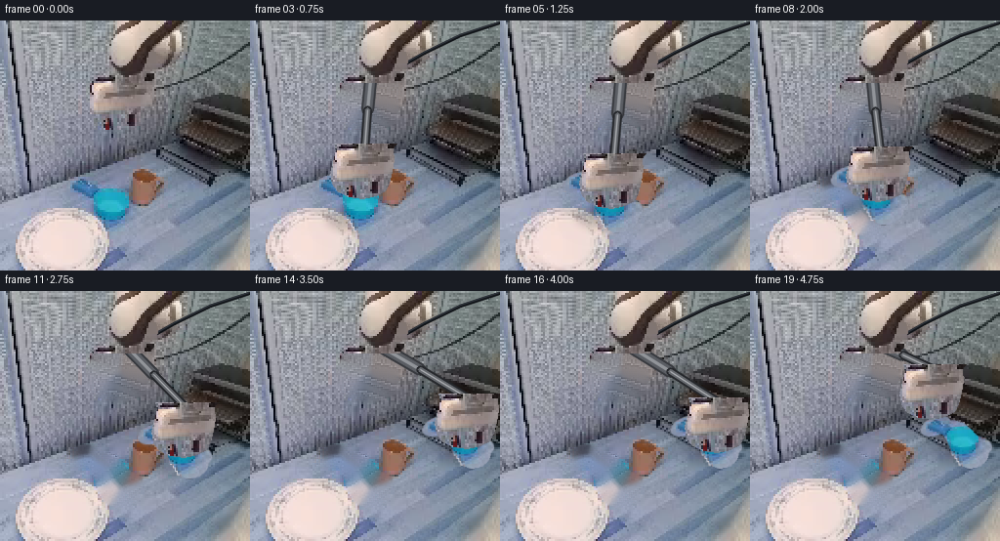
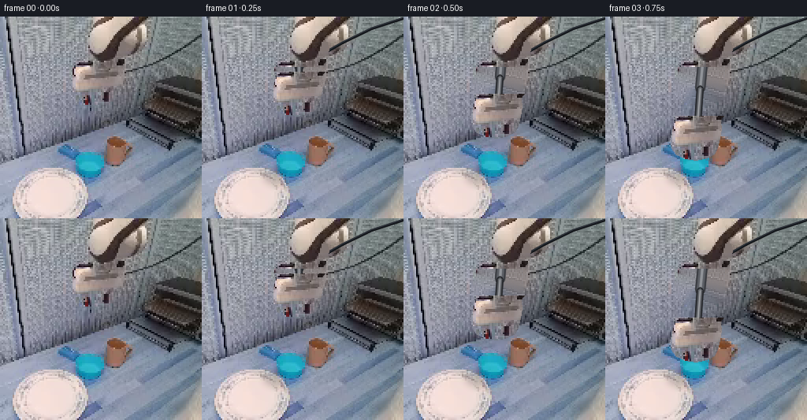
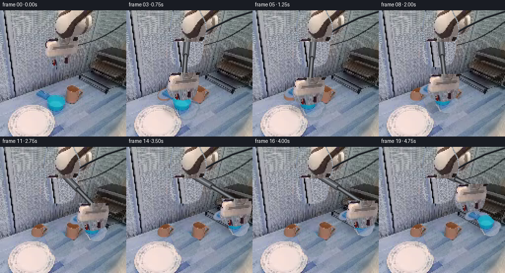
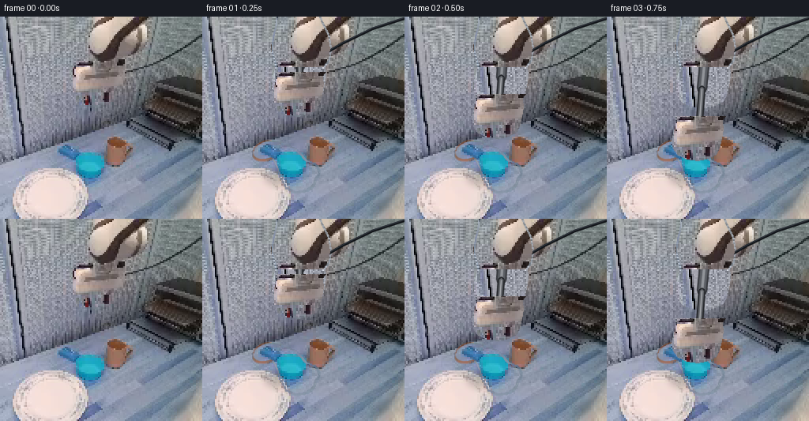

CODING AGENTS AS PIXEL WORLD MODELS
traex/DeepSeek-V4.1-Flash · common50_0044
点击播放 · 原生 RGB 像素
此结果可播放，但该运行尚未通过最终提交审核。页面展示不代表评测通过。
逐轮保存的候选
回放视频、检查图与代码变化。
每份候选均可单独播放。实际图片检查记录在下方工具轨迹中。
候选 01播放与检查图
点击播放 · 原生 RGB 像素


展开代码变化
--- 上一保存版本
+++ 本次保存版本
@@ -0,0 +1,356 @@
+from pathlib import Path
+
+import cv2
+import numpy as np
+from PIL import Image
+
+import artifact_io
+
+
+CASE_DIR = Path(__file__).resolve().parent
+FRAME_PATH = CASE_DIR / "first_frame.png"
+WIDTH = 256
+HEIGHT = 256
+FRAMES = 20
+FPS = 4
+
+
+def smoothstep(value):
+ value = float(np.clip(value, 0.0, 1.0))
+ return value * value * (3.0 - 2.0 * value)
+
+
+def lerp(a, b, t):
+ return a + (b - a) * t
+
+
+def ellipse_mask(shape, center, axes, angle=0.0):
+ mask = np.zeros(shape, np.uint8)
+ cv2.ellipse(
+ mask,
+ (int(round(center[0])), int(round(center[1]))),
+ (int(round(axes[0])), int(round(axes[1]))),
+ angle,
+ 0,
+ 360,
+ 255,
+ -1,
+ cv2.LINE_AA,
+ )
+ return mask
+
+
+def make_robot_masks(image):
+ arm_polygon = np.array(
+ [
+ (96, 0),
+ (147, 0),
+ (152, 12),
+ (158, 23),
+ (161, 40),
+ (159, 54),
+ (153, 62),
+ (154, 74),
+ (152, 86),
+ (149, 98),
+ (145, 105),
+ (136, 110),
+ (122, 113),
+ (108, 111),
+ (97, 106),
+ (91, 98),
+ (89, 87),
+ (92, 75),
+ (95, 64),
+ (92, 53),
+ (89, 40),
+ (91, 27),
+ (94, 15),
+ ],
+ np.int32,
+ )
+ arm = np.zeros(image.shape[:2], np.uint8)
+ cv2.fillPoly(arm, [arm_polygon], 255)
+
+ cable = np.zeros(image.shape[:2], np.uint8)
+ cv2.line(cable, (137, 51), (255, 1), 255, 4, cv2.LINE_AA)
+
+ # The two masks are deliberately kept separate: the cable is redrawn
+ # as the arm changes pose, while the arm itself is composited as a sprite.
+ return arm, cable
+
+
+def make_cup_mask(image):
+ hsv = cv2.cvtColor(image, cv2.COLOR_RGB2HSV)
+ hue, saturation, value = (hsv[:, :, i] for i in range(3))
+ shape = image.shape[:2]
+
+ silhouette = np.zeros(shape, np.uint8)
+ body = np.array(
+ [
+ (82, 166),
+ (105, 164),
+ (116, 168),
+ (123, 175),
+ (129, 182),
+ (136, 188),
+ (141, 195),
+ (143, 203),
+ (140, 212),
+ (132, 219),
+ (119, 221),
+ (107, 216),
+ (101, 208),
+ (99, 199),
+ (97, 190),
+ (93, 182),
+ (87, 176),
+ ],
+ np.int32,
+ )
+ cv2.fillPoly(silhouette, [body], 255)
+ silhouette |= ellipse_mask(shape, (83, 169), (18, 10), -18)
+ silhouette |= ellipse_mask(shape, (135, 195), (12, 9), 32)
+ silhouette = cv2.morphologyEx(
+ silhouette, cv2.MORPH_CLOSE, np.ones((3, 3), np.uint8)
+ )
+
+ # Keep the blue ceramic and its dark interior, but let the small
+ # background openings inside the handles remain transparent.
+ color = (
+ ((hue >= 82) & (hue <= 126) & (saturation >= 38) & (value >= 36))
+ | (value <= 86)
+ )
+ alpha = silhouette & (color.astype(np.uint8) * 255)
+ alpha = cv2.morphologyEx(alpha, cv2.MORPH_CLOSE, np.ones((3, 3), np.uint8))
+
+ # Preserve the ceramic rim where antialiasing lowered saturation.
+ rim = cv2.dilate(alpha, np.ones((3, 3), np.uint8), iterations=1) & silhouette
+ alpha = np.maximum(alpha, rim)
+
+ # The cup's top rim and lower wall have small highlight gaps. Close
+ # only holes enclosed by the object, not the handle openings.
+ contours, _ = cv2.findContours(alpha, cv2.RETR_EXTERNAL, cv2.CHAIN_APPROX_SIMPLE)
+ filled = np.zeros_like(alpha)
+ for contour in contours:
+ if cv2.contourArea(contour) > 80:
+ cv2.drawContours(filled, [contour], -1, 255, -1)
+ alpha = cv2.bitwise_and(filled, silhouette)
+
+ ys, xs = np.where(alpha > 0)
+ if len(xs) == 0:
+ raise RuntimeError("Could not extract the cup")
+ return alpha, (xs.min(), ys.min(), xs.max() + 1, ys.max() + 1)
+
+
+def clean_background(image, arm_mask, cable_mask, cup_mask):
+ object_mask = arm_mask | cable_mask | cup_mask
+ object_mask = cv2.dilate(object_mask, np.ones((3, 3), np.uint8), iterations=1)
+
+ base = cv2.inpaint(
+ cv2.cvtColor(image, cv2.COLOR_RGB2BGR),
+ object_mask,
+ 7,
+ cv2.INPAINT_TELEA,
+ )
+ base = cv2.cvtColor(base, cv2.COLOR_BGR2RGB).astype(np.float32)
+
+ # Reintroduce fine surface texture from nearby untouched pixels. This
+ # keeps the repaired wall and table from looking like smooth plastic.
+ blur = cv2.GaussianBlur(image.astype(np.float32), (0, 0), 1.25)
+ detail = image.astype(np.float32) - blur
+ clean = base.copy()
+ offsets = [(96, 0), (-82, 0), (0, -72), (0, 72), (116, 0), (-104, 0), (62, 0), (-60, 0)]
+ ys, xs = np.where(object_mask > 0)
+ height, width = object_mask.shape
+ for y, x in zip(ys, xs):
+ source = None
+ for dx, dy in offsets:
+ sx, sy = x + dx, y + dy
+ if 0 <= sx < width and 0 <= sy < height and object_mask[sy, sx] == 0:
+ source = (sx, sy)
+ break
+ if source is not None:
+ sx, sy = source
+ clean[y, x] += 0.75 * detail[sy, sx]
+
+ # Feather the repair boundary while keeping the untouched scene exact.
+ feather = cv2.GaussianBlur(object_mask.astype(np.float32) / 255.0, (0, 0), 1.1)
+ clean = image.astype(np.float32) * (1.0 - feather[..., None]) + clean * feather[..., None]
+ return np.clip(clean, 0, 255).astype(np.uint8)
+
+
+def crop_rgba(image, mask, box):
+ x0, y0, x1, y1 = box
+ rgba = np.dstack([image[y0:y1, x0:x1], mask[y0:y1, x0:x1]])
+ return rgba
+
+
+def transform_rgba(sprite, scale=1.0, angle=0.0):
+ if abs(scale - 1.0) < 1e-6 and abs(angle) < 1e-6:
+ return sprite
+ height, width = sprite.shape[:2]
+ center = ((width - 1) / 2.0, (height - 1) / 2.0)
+ matrix = cv2.getRotationMatrix2D(center, angle, scale)
+ return cv2.warpAffine(
+ sprite,
+ matrix,
+ (width, height),
+ flags=cv2.INTER_LINEAR,
+ borderMode=cv2.BORDER_CONSTANT,
+ borderValue=(0, 0, 0, 0),
+ )
+
+
+def paste_rgba(canvas, sprite, top_left):
+ x, y = int(round(top_left[0])), int(round(top_left[1]))
+ height, width = sprite.shape[:2]
+ canvas_height, canvas_width = canvas.shape[:2]
+ x0, y0 = max(0, x), max(0, y)
+ x1, y1 = min(canvas_width, x + width), min(canvas_height, y + height)
+ if x0 >= x1 or y0 >= y1:
+ return
+ sx0, sy0 = x0 - x, y0 - y
+ sx1, sy1 = sx0 + (x1 - x0), sy0 + (y1 - y0)
+ source = sprite[sy0:sy1, sx0:sx1].astype(np.float32)
+ alpha = source[:, :, 3:4] / 255.0
+ destination = canvas[y0:y1, x0:x1].astype(np.float32)
+ canvas[y0:y1, x0:x1] = np.clip(
+ source[:, :, :3] * alpha + destination * (1.0 - alpha), 0, 255
+ ).astype(np.uint8)
+
+
+def draw_shadow(canvas, center, axes, strength=0.22):
+ mask = ellipse_mask(canvas.shape[:2], center, axes).astype(np.float32) / 255.0
+ mask = cv2.GaussianBlur(mask, (0, 0), 4.5)
+ canvas[:] = np.clip(
+ canvas.astype(np.float32) * (1.0 - strength * mask[..., None]), 0, 255
+ ).astype(np.uint8)
+
+
+def draw_cable(canvas):
+ points = np.array([(143, 53), (178, 33), (215, 15), (255, 2)], np.int32)
+ cv2.polylines(canvas, [points], False, (17, 20, 24), 2, cv2.LINE_AA)
+ highlight = points.copy()
+ highlight[:, 1] -= 1
+ cv2.polylines(canvas, [highlight], False, (48, 53, 61), 1, cv2.LINE_AA)
+
+
+def draw_rail(canvas, start, end):
+ start = (int(round(start[0])), int(round(start[1])))
+ end = (int(round(end[0])), int(round(end[1])))
+ mid = ((start[0] + end[0]) // 2, (start[1] + end[1]) // 2)
+
+ cv2.line(canvas, start, mid, (55, 57, 62), 11, cv2.LINE_AA)
+ cv2.line(canvas, start, mid, (91, 94, 100), 7, cv2.LINE_AA)
+ cv2.line(canvas, start, mid, (145, 148, 153), 2, cv2.LINE_AA)
+
+ cv2.line(canvas, mid, end, (37, 39, 43), 7, cv2.LINE_AA)
+ cv2.line(canvas, mid, end, (100, 103, 108), 4, cv2.LINE_AA)
+ cv2.line(canvas, mid, end, (170, 172, 176), 1, cv2.LINE_AA)
+
+ cv2.circle(canvas, start, 6, (49, 51, 55), -1, cv2.LINE_AA)
+ cv2.circle(canvas, start, 4, (119, 121, 126), -1, cv2.LINE_AA)
+ cv2.circle(canvas, end, 4, (48, 50, 54), -1, cv2.LINE_AA)
+ cv2.circle(canvas, end, 2, (157, 159, 163), -1, cv2.LINE_AA)
+
+
+def arm_pose(frame):
+ if frame <= 4:
+ t = smoothstep(frame / 4.0)
+ return lerp(0.0, -8.0, t), lerp(0.0, 82.0, t)
+ if frame <= 6:
+ t = smoothstep((frame - 4) / 2.0)
+ return -8.0, lerp(82.0, 76.0, t)
+ if frame <= 14:
+ t = smoothstep((frame - 6) / 8.0)
+ return lerp(-8.0, 100.0, t), lerp(76.0, 48.0, t)
+ if frame <= 16:
+ t = smoothstep((frame - 14) / 2.0)
+ return 100.0, lerp(48.0, 52.0, t)
+ t = smoothstep((frame - 16) / 3.0)
+ return lerp(100.0, 64.0, t), lerp(52.0, 18.0, t)
+
+
+def cup_pose(frame):
+ pickup_center = np.array([105.0, 188.0], dtype=np.float32)
+ target_center = np.array([211.0, 154.0], dtype=np.float32)
+ if frame < 4:
+ return pickup_center, 1.0, 0.0
+
+ if frame <= 15:
+ dx, dy = arm_pose(frame)
+ center = pickup_center + np.array([dx + 8.0, dy - 82.0], dtype=np.float32)
+ t = smoothstep((frame - 4) / 11.0)
+ return center, lerp(1.0, 0.88, t), lerp(0.0, 4.0, t)
+
+ return target_center, 0.88, 4.0
+
+
+def main():
+ image = np.asarray(Image.open(FRAME_PATH).convert("RGB"))
+ if image.shape != (HEIGHT, WIDTH, 3):
+ raise ValueError(f"Unexpected first frame shape: {image.shape}")
+
+ arm_mask, cable_mask = make_robot_masks(image)
+ cup_mask, cup_box = make_cup_mask(image)
+ background = clean_background(image, arm_mask, cable_mask, cup_mask)
+
+ upper_box = (84, 0, 164, 64)
+ lower_box = (84, 57, 164, 115)
+ upper_sprite = crop_rgba(image, arm_mask, upper_box)
+ lower_sprite = crop_rgba(image, arm_mask, lower_box)
+ cup_sprite = crop_rgba(image, cup_mask, cup_box)
+
+ # A light edge softening removes the staircase from the hand-drawn masks
+ # without changing the original pixels used for frame zero.
+ for sprite in (upper_sprite, lower_sprite, cup_sprite):
+ alpha = cv2.GaussianBlur(sprite[:, :, 3], (0, 0), 0.45)
+ sprite[:, :, 3] = np.clip(alpha, 0, 255)
+
+ lower_origin = np.array([lower_box[0], lower_box[1]], dtype=np.float32)
+ cup_center_local = np.array(
+ [(cup_box[0] + cup_box[2] - 1) / 2.0, (cup_box[1] + cup_box[3] - 1) / 2.0],
+ dtype=np.float32,
+ )
+
+ frames = []
+ for frame_index in range(FRAMES):
+ if frame_index == 0:
+ frames.append(image.copy())
+ continue
+
+ canvas = background.copy()
+ dx, dy = arm_pose(frame_index)
+ center, cup_scale, cup_angle = cup_pose(frame_index)
+
+ shadow_axes = (int(round(30 * cup_scale)), int(round(11 * cup_scale)))
+ draw_shadow(
+ canvas,
+ (center[0] + 3.0, center[1] + 16.0 * cup_scale),
+ shadow_axes,
+ strength=0.18,
+ )
+
+ cup = transform_rgba(cup_sprite, cup_scale, cup_angle)
+ cup_height, cup_width = cup.shape[:2]
+ cup_top_left = (
+ center[0] - (cup_width - 1) / 2.0,
+ center[1] - (cup_height - 1) / 2.0,
+ )
+ paste_rgba(canvas, cup, cup_top_left)
+
+ draw_cable(canvas)
+ rail_end = (124.0 + dx, 62.0 + dy)
+ draw_rail(canvas, (124.0, 51.0), rail_end)
+ paste_rgba(canvas, upper_sprite, (upper_box[0], upper_box[1]))
+ paste_rgba(canvas, lower_sprite, lower_origin + np.array([dx, dy]))
+
+ frames.append(canvas)
+
+ frames = np.stack(frames).astype(np.uint8)
+ artifact_io.save(frames, CASE_DIR)
+
+
+if __name__ == "__main__":
+ main()
候选 02播放与检查图
点击播放 · 原生 RGB 像素


展开代码变化
--- 上一保存版本
+++ 本次保存版本
@@ -144,38 +144,61 @@
def clean_background(image, arm_mask, cable_mask, cup_mask):
- object_mask = arm_mask | cable_mask | cup_mask
- object_mask = cv2.dilate(object_mask, np.ones((3, 3), np.uint8), iterations=1)
-
- base = cv2.inpaint(
- cv2.cvtColor(image, cv2.COLOR_RGB2BGR),
- object_mask,
- 7,
- cv2.INPAINT_TELEA,
- )
- base = cv2.cvtColor(base, cv2.COLOR_BGR2RGB).astype(np.float32)
-
- # Reintroduce fine surface texture from nearby untouched pixels. This
- # keeps the repaired wall and table from looking like smooth plastic.
- blur = cv2.GaussianBlur(image.astype(np.float32), (0, 0), 1.25)
- detail = image.astype(np.float32) - blur
- clean = base.copy()
- offsets = [(96, 0), (-82, 0), (0, -72), (0, 72), (116, 0), (-104, 0), (62, 0), (-60, 0)]
- ys, xs = np.where(object_mask > 0)
- height, width = object_mask.shape
+ arm_mask = cv2.dilate(arm_mask, np.ones((5, 5), np.uint8), iterations=1)
+ cup_mask = cv2.dilate(cup_mask, np.ones((5, 5), np.uint8), iterations=1)
+ clean = image.copy()
+ height, width = image.shape[:2]
+
+ # The wall is vertically corrugated and the table is blue with subtle
+ # horizontal grain. Copying nearby pixels along those directions rebuilds
+ # a plausible clean plate while retaining the original texture.
+ candidates = [
+ (-88, 0),
+ (88, 0),
+ (-64, 0),
+ (64, 0),
+ (-112, 0),
+ (112, 0),
+ (0, -54),
+ (0, 54),
+ ]
+ ys, xs = np.where(arm_mask > 0)
for y, x in zip(ys, xs):
- source = None
- for dx, dy in offsets:
+ for dx, dy in candidates:
sx, sy = x + dx, y + dy
- if 0 <= sx < width and 0 <= sy < height and object_mask[sy, sx] == 0:
- source = (sx, sy)
+ if not (0 <= sx < width and 0 <= sy < height):
+ continue
+ if arm_mask[sy, sx] == 0 and cup_mask[sy, sx] == 0:
+ clean[y, x] = image[sy, sx]
break
- if source is not None:
- sx, sy = source
- clean[y, x] += 0.75 * detail[sy, sx]
-
- # Feather the repair boundary while keeping the untouched scene exact.
- feather = cv2.GaussianBlur(object_mask.astype(np.float32) / 255.0, (0, 0), 1.1)
+
+ ys, xs = np.where(cup_mask > 0)
+ cup_candidates = [
+ (72, 0),
+ (-72, 0),
+ (92, 0),
+ (-92, 0),
+ (0, -44),
+ (0, 44),
+ ]
+ for y, x in zip(ys, xs):
+ for dx, dy in cup_candidates:
+ sx, sy = x + dx, y + dy
+ if not (0 <= sx < width and 0 <= sy < height):
+ continue
+ if arm_mask[sy, sx] == 0 and cup_mask[sy, sx] == 0:
+ clean[y, x] = image[sy, sx]
+ break
+
+ # Add a restrained amount of local grain to copied flat regions.
+ blur = cv2.GaussianBlur(clean.astype(np.float32), (0, 0), 1.15)
+ detail = clean.astype(np.float32) - blur
+ repair = arm_mask | cup_mask
+ clean = clean.astype(np.float32) + 0.38 * detail
+ clean = np.where(repair[..., None] > 0, clean, image.astype(np.float32))
+
+ # Feather only the repair boundary. Every untouched pixel remains exact.
+ feather = cv2.GaussianBlur(repair.astype(np.float32) / 255.0, (0, 0), 0.8)
clean = image.astype(np.float32) * (1.0 - feather[..., None]) + clean * feather[..., None]
return np.clip(clean, 0, 255).astype(np.uint8)
候选 03播放与检查图
点击播放 · 原生 RGB 像素

展开代码变化
--- 上一保存版本
+++ 本次保存版本
@@ -124,9 +124,13 @@
alpha = silhouette & (color.astype(np.uint8) * 255)
alpha = cv2.morphologyEx(alpha, cv2.MORPH_CLOSE, np.ones((3, 3), np.uint8))
- # Preserve the ceramic rim where antialiasing lowered saturation.
- rim = cv2.dilate(alpha, np.ones((3, 3), np.uint8), iterations=1) & silhouette
- alpha = np.maximum(alpha, rim)
+ # Keep the solid body and rim, but leave the gaps between the two handles
+ # transparent instead of carrying tabletop pixels with the cup.
+ contours, _ = cv2.findContours(alpha, cv2.RETR_EXTERNAL, cv2.CHAIN_APPROX_SIMPLE)
+ for contour in contours:
+ if cv2.contourArea(contour) > 90:
+ cv2.drawContours(alpha, [contour], -1, 255, -1)
+ alpha = cv2.bitwise_and(alpha, silhouette)
# The cup's top rim and lower wall have small highlight gaps. Close
# only holes enclosed by the object, not the handle openings.
@@ -278,6 +282,45 @@
cv2.circle(canvas, end, 2, (157, 159, 163), -1, cv2.LINE_AA)
+def draw_wrist_and_grip(canvas, wrist, cup_center):
+ wrist = np.array(wrist, dtype=np.float32)
+ cup_center = np.array(cup_center, dtype=np.float32)
+ direction = cup_center - wrist
+ length = max(1.0, float(np.linalg.norm(direction)))
+ unit = direction / length
+ side = np.array([-unit[1], unit[0]], dtype=np.float32)
+ reach = min(length * 0.88, 28.0)
+ claw_root = wrist + unit * reach
+
+ root = tuple(np.round(wrist).astype(int))
+ tip = tuple(np.round(claw_root).astype(int))
+ cv2.line(canvas, root, tip, (42, 44, 48), 8, cv2.LINE_AA)
+ cv2.line(canvas, root, tip, (114, 116, 121), 5, cv2.LINE_AA)
+ cv2.line(canvas, root, tip, (181, 183, 187), 1, cv2.LINE_AA)
+ cv2.circle(canvas, root, 5, (72, 74, 79), -1, cv2.LINE_AA)
+ cv2.circle(canvas, root, 2, (178, 180, 184), -1, cv2.LINE_AA)
+
+ for sign in (-1.0, 1.0):
+ a = claw_root + side * 5.0 * sign
+ b = claw_root + unit * 11.0 + side * 3.0 * sign
+ cv2.line(
+ canvas,
+ tuple(np.round(a).astype(int)),
+ tuple(np.round(b).astype(int)),
+ (27, 29, 33),
+ 3,
+ cv2.LINE_AA,
+ )
+ cv2.circle(
+ canvas,
+ tuple(np.round(b).astype(int)),
+ 2,
+ (176, 178, 182),
+ -1,
+ cv2.LINE_AA,
+ )
+
+
def arm_pose(frame):
if frame <= 4:
t = smoothstep(frame / 4.0)
@@ -368,6 +411,11 @@
draw_rail(canvas, (124.0, 51.0), rail_end)
paste_rgba(canvas, upper_sprite, (upper_box[0], upper_box[1]))
paste_rgba(canvas, lower_sprite, lower_origin + np.array([dx, dy]))
+ draw_wrist_and_grip(
+ canvas,
+ (128.0 + dx, 101.0 + dy),
+ (center[0] - 1.0, center[1] - 5.0 * cup_scale),
+ )
frames.append(canvas)
候选 04播放与检查图
候选 05播放与检查图
点击播放 · 原生 RGB 像素

展开代码变化
--- 上一保存版本
+++ 本次保存版本
@@ -328,26 +328,26 @@
if frame <= 6:
t = smoothstep((frame - 4) / 2.0)
return -8.0, lerp(82.0, 76.0, t)
- if frame <= 14:
- t = smoothstep((frame - 6) / 8.0)
- return lerp(-8.0, 100.0, t), lerp(76.0, 48.0, t)
- if frame <= 16:
- t = smoothstep((frame - 14) / 2.0)
- return 100.0, lerp(48.0, 52.0, t)
- t = smoothstep((frame - 16) / 3.0)
- return lerp(100.0, 64.0, t), lerp(52.0, 18.0, t)
+ if frame <= 13:
+ t = smoothstep((frame - 6) / 7.0)
+ return lerp(-8.0, 88.0, t), lerp(76.0, 45.0, t)
+ if frame <= 15:
+ t = smoothstep((frame - 13) / 2.0)
+ return lerp(88.0, 93.0, t), lerp(45.0, 50.0, t)
+ t = smoothstep((frame - 15) / 4.0)
+ return lerp(93.0, 72.0, t), lerp(50.0, 20.0, t)
def cup_pose(frame):
pickup_center = np.array([105.0, 188.0], dtype=np.float32)
- target_center = np.array([211.0, 154.0], dtype=np.float32)
+ target_center = np.array([211.0, 160.0], dtype=np.float32)
if frame < 4:
return pickup_center, 1.0, 0.0
- if frame <= 15:
+ if frame <= 14:
dx, dy = arm_pose(frame)
- center = pickup_center + np.array([dx + 8.0, dy - 82.0], dtype=np.float32)
- t = smoothstep((frame - 4) / 11.0)
+ center = pickup_center + np.array([dx + 5.0, dy - 85.0], dtype=np.float32)
+ t = smoothstep((frame - 4) / 10.0)
return center, lerp(1.0, 0.88, t), lerp(0.0, 4.0, t)
return target_center, 0.88, 4.0
候选 06播放与检查图
可观测工具轨迹
实际执行的命令与返回图片。
命令 1exit 0
/bin/bash -c "pwd && rg --files -g 'prompt.txt' -g 'GENERATION_RULES.md' -g '"'!*.mp4'"' -g '"'!*.webm'"' | sort"
命令 2exit 0
/bin/bash -c "ls -la && find . -maxdepth 2 -type f -printf '%p\\n' | sort | head -200"
命令 3exit 0
/bin/bash -c 'cat GENERATION_RULES.md'
命令 4exit 0
/bin/bash -c "cat prompt.txt && printf '\\n--- task spec ---\\n' && cat task_spec.json"
命令 5exit 0
/bin/bash -c "sed -n '1,240p' artifact_io.py && printf '\\n--- player ---\\n' && sed -n '1,240p' player_template.html"
命令 6exit 0
/bin/bash -c "python - <<'PY'
from PIL import Image
im=Image.open('first_frame.png')
print(im.mode, im.size)
for name,box in {'arm':(60,0,190,130),'cup':(65,145,155,220),'rack':(145,85,256,190),'table':(0,100,256,256)}.items():
im.crop(box).resize(((box[2]-box[0])*4,(box[3]-box[1])*4),Image.Resampling.NEAREST).save('.tmp/'+name+'.png')
PY"命令 7exit 0
/bin/bash -c "python - <<'PY' mods=['numpy','PIL','cv2','scipy','skimage','matplotlib'] for m in mods: try: mod=__import__(m); print(m,'ok',getattr(mod,'__version__','')) except Exception as e: print(m,'missing',e) PY"
命令 8exit 0
/bin/bash -c "python - <<'PY'
from PIL import Image
im=Image.open('first_frame.png')
pts=[(100,180),(120,175),(135,188),(205,170),(230,145),(220,155),(95,55),(100,25),(230,110),(170,105)]
for p in pts: print(p,im.getpixel(p))
PY"命令 9exit 0
/bin/bash -c "python - <<'PY'
from PIL import Image, ImageDraw, ImageFont
im=Image.open('first_frame.png').resize((1024,1024),Image.Resampling.NEAREST)
d=ImageDraw.Draw(im)
for p in range(0,257,20):
q=p*4
d.line([(q,0),(q,1024)],fill=(255,40,40),width=1)
d.line([(0,q),(1024,q)],fill=(255,40,40),width=1)
d.text((q+2,2),str(p),fill=(255,255,0))
d.text((2,q+2),str(p),fill=(255,255,0))
im.save('.tmp/grid.png')
PY"命令 10exit 0
/bin/bash -c "python - <<'PY'
import cv2,numpy as np
im=cv2.imread('first_frame.png')[:,:,::-1]
r,g,b=im[:,:,0],im[:,:,1],im[:,:,2]
mask=(b.astype(int)>r.astype(int)+35)&(g.astype(int)>r.astype(int)+20)&(b>90)&(g>80)
mask[:140]=False; mask[:, :60]=False; mask[:,160:]=False
ys,xs=np.where(mask)
print(len(xs), xs.min(),xs.max(),ys.min(),ys.max())
for y in range(145,210,5):
row=np.where(mask[y])[0]
if len(row): print(y,row.min(),row.max(),len(row))
PY"命令 11exit 0
/bin/bash -c "python - <<'PY'
import cv2,numpy as np
im=cv2.imread('first_frame.png')[:,:,::-1]
# arm mask: brighter neutral in top region, excluding background. print broad ranges per y
for y in range(0,125,5):
a=im[max(0,y-2):y+3]
# pixel intensity and low chroma, exclude bg bluish
sel=(a.mean(2)>95)&(a.max(2)-a.min(2)<28)
xs=np.where(sel.any(0))[0]
# segment contiguous
runs=[]
if len(xs):
cuts=np.where(np.diff(xs)>1)[0]
for s,e in zip(np.r_[0,cuts+1],np.r_[cuts+1,len(xs)]):
if xs[e-1]-xs[s]>=2:runs.append((int(xs[s]),int(xs[e-1])))
print(y,runs)
PY"命令 12exit 0
/bin/bash -c "python - <<'PY'
from PIL import Image
im=Image.open('first_frame.png')
# crop top and upscale lanczos + nearest comparisons
for nm,box in [('top',(50,0,190,125)),('robot',(70,0,170,120)),('cup2',(60,145,145,220)),('rack2',(140,75,256,200))]:
c=im.crop(box)
c.resize((c.width*8,c.height*8),Image.Resampling.NEAREST).save('.tmp/'+nm+'_nearest.png')
c.resize((c.width*8,c.height*8),Image.Resampling.LANCZOS).save('.tmp/'+nm+'_lanczos.png')
PY"命令 13exit 0
/bin/bash -c "python - <<'PY'
import cv2,numpy as np
im=cv2.imread('first_frame.png')
hsv=cv2.cvtColor(im,cv2.COLOR_BGR2HSV)
for p in [(100,180),(120,175),(135,188),(82,170),(90,160),(115,200),(205,170),(230,145),(125,100)]:
x,y=p; print(p, im[y,x][::-1], hsv[y,x])
PY"命令 14exit 0
/bin/bash -c "python - <<'PY'
import cv2,numpy as np
im=cv2.imread('first_frame.png')
hsv=cv2.cvtColor(im,cv2.COLOR_BGR2HSV)
H,S,V=[hsv[:,:,i] for i in range(3)]
mask=((H>85)&(H<115)&(S>90)&(V>80))
mask[:145]=0;mask[:, :50]=0;mask[:,150:]=0
# morphology
n,lab,stats,cent=cv2.connectedComponentsWithStats(mask.astype('uint8'),8)
for i in range(1,n):
if stats[i,cv2.CC_STAT_AREA]>20: print(i,stats[i],cent[i])
PY"命令 15exit 0
/bin/bash -c "python - <<'PY'
import cv2,numpy as np
im=cv2.imread('first_frame.png')
hsv=cv2.cvtColor(im,cv2.COLOR_BGR2HSV)
# connected components under broad bluish chroma in cup region
H,S,V=[hsv[:,:,i] for i in range(3)]
for ss in [40,50,60,70,80]:
m=((H>85)&(H<118)&(S>ss)&(V>60)).astype('uint8'); m[:140]=0;m[:,:50]=0;m[:,150:]=0
n,lab,stats,cent=cv2.connectedComponentsWithStats(m,8)
print('S',ss,[(tuple(stats[i,:4]),stats[i,4]) for i in range(1,n) if stats[i,4]>100])
PY"命令 16exit 0
/bin/bash -c "python - <<'PY'
import cv2,numpy as np
im=cv2.imread('first_frame.png')
hsv=cv2.cvtColor(im,cv2.COLOR_BGR2HSV)
H,S,V=[hsv[:,:,i] for i in range(3)]
m=((H>80)&(H<120)&(S>50)&(V>55)).astype('uint8');m[:135]=0;m[:,:60]=0;m[:,145:]=0
cv2.imwrite('.tmp/cupmask.png',m*255)
# roi with mask alpha
out=np.zeros_like(im);out[:]=255;out[m.astype(bool)]=im[m.astype(bool)]
cv2.imwrite('.tmp/cupmasked.png',out)
PY"命令 17exit 0
/bin/bash -c "python - <<'PY'
import cv2,numpy as np
from PIL import Image,ImageDraw
im=cv2.imread('first_frame.png')
mask=np.zeros(im.shape[:2],np.uint8)
# robot polygon including cable
poly=np.array([(91,0),(152,0),(159,57),(153,68),(153,85),(147,105),(132,112),(106,112),(88,103),(87,85),(94,73),(93,57),(87,42)],np.int32)
cv2.fillPoly(mask,[poly],255)
# cable line
cv2.line(mask,(140,52),(256,0),255,3)
# cup mask broad ellipse/handles
cv2.ellipse(mask,(108,185),(41,35),0,0,360,255,-1)
cv2.ellipse(mask,(84,170),(20,14),-20,0,360,255,-1)
# dont inpaint plate area at x<60 y>200
# dilate
mask=cv2.dilate(mask,np.ones((5,5),np.uint8),iterations=1)
for method,name in [(cv2.INPAINT_TELEA,'telea'),(cv2.INPAINT_NS,'ns')]:
out=cv2.inpaint(im,mask,7,method)
cv2.imwrite('.tmp/bg_'+name+'.png',out)
# Patch-based row fill: for each masked pixel choose nearby unmasked same row offset alternating based on x
out=im.copy(); H,W=im.shape[:2]
ys,xs=np.where(mask>0)
# horizontal nearest in row
for y,x in zip(ys,xs):
found=False
for d in range(2,90):
for xx in (x-d,x+d):
if 0<=xx<W and mask[y,xx]==0:
out[y,x]=im[y,xx]; found=True; break
if found:break
# add slight vertical smooth later
cv2.imwrite('.tmp/bg_row.png',out)
# save mask
cv2.imwrite('.tmp/mask.png',mask)
PY"命令 18exit 0
/bin/bash -c "python - <<'PY'
import cv2,numpy as np
im=cv2.imread('first_frame.png')
# test masks
robot=np.zeros(im.shape[:2],np.uint8)
poly=np.array([(92,0),(151,0),(159,58),(152,67),(152,83),(146,102),(132,111),(106,112),(90,103),(88,87),(95,74),(94,58),(88,42)],np.int32)
cv2.fillPoly(robot,[poly],255)
# remove thin dark finger inner areas? no
# cable via mask pixels in triangle
for x in range(137,256):
y=51-(x-137)*51/119
cv2.line(robot,(x,int(y-1)),(x,int(y+1)),255,1)
# cup precise component based on threshold + surrounding antialias
hsv=cv2.cvtColor(im,cv2.COLOR_BGR2HSV); H,S,V=[hsv[:,:,i] for i in range(3)]
cup=((H>80)&(H<120)&(S>45)&(V>45)).astype('uint8')*255
# only cup bbox
roi=np.zeros_like(cup); roi[145:225,55:145]=255; cup &= roi
# close and dilate
cup=cv2.dilate(cup,np.ones((5,5),np.uint8),1)
# combine
mask=robot|cup
# avoid remove plate y>205 x<65? no cup isn't there
cv2.imwrite('.tmp/mask2.png',mask)
cv2.imwrite('.tmp/robotmask.png',robot)
cv2.imwrite('.tmp/cupmask2.png',cup)
# bg inpaint
for r in [3,5,9]:
out=cv2.inpaint(im,mask,r,cv2.INPAINT_TELEA);cv2.imwrite(f'.tmp/bg2_t{r}.png',out)
PY"命令 19exit 0
/bin/bash -c "python - <<'PY'
from PIL import Image
im=Image.open('first_frame.png')
im.crop((70,150,145,220)).resize((750,700),Image.Resampling.LANCZOS).save('.tmp/cupclose.png')
PY"命令 20exit 0
/bin/bash -c "python - <<'PY'
import cv2,numpy as np
im=cv2.imread('first_frame.png')
# foreground robot based on polygon and color; inspect mask overlays
robot=np.zeros(im.shape[:2],np.uint8)
poly=np.array([(92,0),(151,0),(159,58),(152,67),(152,83),(146,102),(132,111),(106,112),(90,103),(88,87),(95,74),(94,58),(88,42)],np.int32)
cv2.fillPoly(robot,[poly],255)
# compare underlying colors with bg? create overlay
out=im.copy();out[robot>0]=(0,0,255)
cv2.addWeighted(im,.55,out,.45,0)
cv2.imwrite('.tmp/robot_overlay.png',cv2.addWeighted(im,.45,out,.55,0))
# check component segmentation with threshold intensity within polygon
# let's print unique-ish color distribution
PY"命令 21exit 0
/bin/bash -c "python - <<'PY'
import cv2,numpy as np
im=cv2.imread('first_frame.png')
robot=np.zeros(im.shape[:2],np.uint8)
poly=np.array([(92,0),(151,0),(159,58),(152,67),(152,83),(146,102),(132,111),(106,112),(90,103),(88,87),(95,74),(94,58),(88,42)],np.int32)
cv2.fillPoly(robot,[poly],255)
# cable manually
cv2.line(robot,(137,50),(256,0),255,3)
hsv=cv2.cvtColor(im,cv2.COLOR_BGR2HSV);H,S,V=[hsv[:,:,i] for i in range(3)]
cup=((H>80)&(H<120)&(S>45)&(V>45)).astype('uint8')*255
roi=np.zeros_like(cup);roi[145:225,55:145]=255;cup&=roi;cup=cv2.dilate(cup,np.ones((3,3),np.uint8),1)
mask=robot|cup
cv2.imwrite('.tmp/bg2_t3.png',cv2.inpaint(im,mask,3,cv2.INPAINT_TELEA))
# mask robot exact-ish from inpaint differences? use polygon + cable. Create RGBA robot by masking
rgba=np.dstack([im,robot])
cv2.imwrite('.tmp/robot_rgba.png',rgba)
PY"命令 22exit 0
/bin/bash -c "python - <<'PY'
from PIL import Image
import numpy as np
im=Image.open('first_frame.png').convert('RGB')
a=np.array(im)
# alpha from exact mask region? print key colors and bbox around cup at y 160-212
for y in [158,160,162,165,170,175,180,185,190,195,200,205,210]:
# blue-ish pixels
xs=[]
for x in range(50,150):
r,g,b=a[y,x]
if int(b)-int(r)>20 and int(g)-int(r)>10: xs.append(x)
print(y,(min(xs),max(xs),len(xs)) if xs else None)
PY"命令 23exit 0
/bin/bash -c "python - <<'PY'
import cv2,numpy as np
im=cv2.imread('first_frame.png')
hsv=cv2.cvtColor(im,cv2.COLOR_BGR2HSV);H,S,V=[hsv[:,:,i] for i in range(3)]
# polygon approximate cup silhouette
poly=np.array([(80,158),(111,158),(120,166),(127,175),(130,184),(135,190),(144,197),(143,208),(137,218),(121,221),(105,217),(99,207),(96,195),(94,185),(86,178),(70,177),(64,171),(68,164)],np.int32)
mask=np.zeros(im.shape[:2],np.uint8);cv2.fillPoly(mask,[poly],255)
# include only if chroma blue-ish or dark hole
ch=((H>70)&(H<125)&(S>30)) | (V<70)
# force poly, but remove table if not chroma? all cup mostly blue
mask &= (ch.astype('uint8')*255)
mask=cv2.morphologyEx(mask,cv2.MORPH_CLOSE,np.ones((5,5),np.uint8))
# ensure center body all selected manually by fill? print
cv2.imwrite('.tmp/cupmask3.png',mask)
rgba=np.dstack([im,mask]);cv2.imwrite('.tmp/cup_rgba.png',rgba)
# overlay
out=im.copy();out[mask>0]=(0,0,255);cv2.imwrite('.tmp/cup_overlay.png',cv2.addWeighted(im,.45,out,.55,0))
PY"命令 24exit 0
/bin/bash -c "python - <<'PY'
import cv2,numpy as np
im=cv2.imread('first_frame.png')
hsv=cv2.cvtColor(im,cv2.COLOR_BGR2HSV);H,S,V=[hsv[:,:,i] for i in range(3)]
# broad region
mask=((H>80)&(H<125)&(S>35)&(V>30)).astype('uint8')*255
roi=np.zeros_like(mask);roi[145:230,55:150]=255;mask&=roi
# close fill holes
mask=cv2.morphologyEx(mask,cv2.MORPH_CLOSE,np.ones((7,7),np.uint8))
# keep largest
n,lab,stats,cent=cv2.connectedComponentsWithStats(mask,8); idx=1+np.argmax(stats[1:,4]);mask=(lab==idx).astype('uint8')*255
mask=cv2.dilate(mask,np.ones((3,3),np.uint8),1)
cv2.imwrite('.tmp/cupmask4.png',mask)
rgba=np.dstack([im,mask]);cv2.imwrite('.tmp/cup_rgba4.png',rgba)
out=im.copy();out[mask>0]=(0,0,255);cv2.imwrite('.tmp/cup_overlay4.png',cv2.addWeighted(im,.45,out,.55,0))
# Extract sprite alpha cropped bbox
ys,xs=np.where(mask>0);box=(xs.min(),ys.min(),xs.max()+1,ys.max()+1);print(box)
PY"命令 25exit 0
/bin/bash -c "python - <<'PY'
import cv2,numpy as np
im=cv2.imread('first_frame.png')
# print colors in suspected cup pixels
for y in [145,150,155,160,165,170,180,190,200,210,220,228]:
print('y',y)
for x in [55,60,65,70,75,80,85,90,95,100,105,110,115,120,125,130,135,140,145]:
b,g,r=map(int,im[y,x]); print(x, (r,g,b), end=' | ')
print()
PY"命令 26exit 0
/bin/bash -c "python - <<'PY'
import cv2,numpy as np
im=cv2.imread('first_frame.png')
hsv=cv2.cvtColor(im,cv2.COLOR_BGR2HSV);H,S,V=[hsv[:,:,i] for i in range(3)]
# base cup mask use high saturation blue body, then polygon around handles including low sat
m=((H>85)&(H<120)&(S>70)&(V>70)).astype('uint8')*255
roi=np.zeros_like(m);roi[155:215,80:140]=255;m&=roi
# get bbox and fill external contour? cup consists body + handle separate
contours,_=cv2.findContours(m,cv2.RETR_EXTERNAL,cv2.CHAIN_APPROX_SIMPLE)
print([cv2.contourArea(c) for c in contours])
# create manual silhouette based on visual: left handle ellipse + body polygon
sil=np.zeros(im.shape[:2],np.uint8)
# handle ellipse angled
cv2.ellipse(sil,(84,170),(18,13),-20,0,360,255,-1)
# body
poly=np.array([(79,159),(108,159),(116,164),(121,172),(126,177),(132,183),(136,188),(142,196),(142,207),(137,216),(122,219),(108,215),(101,205),(98,195),(95,184),(91,176),(84,171),(73,172),(65,170),(67,162)],np.int32)
cv2.fillPoly(sil,[poly],255)
# exclude regions where table / plate; handles have cup colors distinct. filter by not light blue bg: V < 210 and chroma
# The body is strong blue; handle edge is dark blue.
# keep silhouette but maybe background blue pattern accidentally in handle gaps. We can segment connected fill mask and combine
# Here full silhouette acceptable because all covers cup + minimal bg; later use color keying alpha via distance to expected cup colors.
cv2.imwrite('.tmp/cup_sil.png',sil)
rgba=np.dstack([im,sil]);cv2.imwrite('.tmp/cup_sil_rgba.png',rgba)
out=im.copy();out[sil>0]=(0,0,255);cv2.imwrite('.tmp/cup_sil_overlay.png',cv2.addWeighted(im,.45,out,.55,0))
PY"命令 27exit 0
/bin/bash -c "python - <<'PY'
import cv2,numpy as np
im=cv2.imread('first_frame.png')
# render depth-ordered arm: back cable, upper segments, forearm, gripper
# Let's create an arm sprite/canvas via shape masks and shading
H,W=im.shape[:2]
canvas=np.zeros((H,W,4),np.uint8)
# Use a polygon mask for existing arm but re-render with shades? extract original arm pixels for exact first frame, easier.
poly=np.array([(92,0),(151,0),(159,58),(152,67),(152,83),(146,102),(132,111),(106,112),(90,103),(88,87),(95,74),(94,58),(88,42)],np.int32)
mask=np.zeros((H,W),np.uint8);cv2.fillPoly(mask,[poly],255)
canvas[...,:3]=im;canvas[...,3]=mask
cv2.imwrite('.tmp/arm_existing.png',canvas)
# create background mask: inpaint robot region and cup region, cable; use broader cup silhouette
cupmask=np.zeros((H,W),np.uint8)
cv2.ellipse(cupmask,(84,170),(20,14),-20,0,360,255,-1)
cup_poly=np.array([(79,159),(108,159),(116,164),(121,172),(126,177),(132,183),(136,188),(142,196),(142,207),(137,216),(122,219),(108,215),(101,205),(98,195),(95,184),(91,176),(84,171),(73,172),(65,170),(67,162)],np.int32)
cv2.fillPoly(cupmask,[cup_poly],255)
cable=np.zeros((H,W),np.uint8);cv2.line(cable,(137,50),(256,0),255,4)
maskall=mask|cv2.dilate(cupmask,np.ones((3,3),np.uint8))|cable
for r in [5,8,12]:
out=cv2.inpaint(im,maskall,r,cv2.INPAINT_TELEA);cv2.imwrite(f'.tmp/bg3_t{r}.png',out)
PY"命令 28exit 0
/bin/bash -c "python - <<'PY'
import cv2,numpy as np
im=cv2.imread('first_frame.png')
hsv=cv2.cvtColor(im,cv2.COLOR_BGR2HSV);H,S,V=[hsv[:,:,i] for i in range(3)]
m=((H>80)&(H<125)&(S>40)&(V>50)).astype('uint8')*255
roi=np.zeros_like(m);roi[150:230,50:150]=255;m&=roi
m=cv2.morphologyEx(m,cv2.MORPH_CLOSE,np.ones((5,5),np.uint8))
# close cup body holes but handle? get contour and fill
contours,_=cv2.findContours(m,cv2.RETR_EXTERNAL,cv2.CHAIN_APPROX_SIMPLE)
sil=np.zeros_like(m)
for c in contours:
if cv2.contourArea(c)>100:
cv2.drawContours(sil,[c],-1,255,-1)
cv2.imwrite('.tmp/cup_sil2.png',sil)
rgba=np.dstack([im,sil]);cv2.imwrite('.tmp/cup_sil2_rgba.png',rgba)
out=im.copy();out[sil>0]=(0,0,255);cv2.imwrite('.tmp/cup_sil2_overlay.png',cv2.addWeighted(im,.45,out,.55,0))
PY"命令 29exit 0
/bin/bash -c "python - <<'PY'
import cv2,numpy as np
im=cv2.imread('first_frame.png')
hsv=cv2.cvtColor(im,cv2.COLOR_BGR2HSV);H,S,V=[hsv[:,:,i] for i in range(3)]
# loose cup candidate including body and handles, then inspect union
m=((H>78)&(H<128)&(S>30)&(V>40)).astype('uint8')*255
roi=np.zeros_like(m);roi[150:225,50:150]=255;m&=roi
# remove thin bg islands? take comps > 50 and close small
m=cv2.morphologyEx(m,cv2.MORPH_CLOSE,np.ones((3,3),np.uint8))
n,lab,stats,cent=cv2.connectedComponentsWithStats(m,8)
sil=np.zeros_like(m)
for i in range(1,n):
if stats[i,4]>50:
print(i,stats[i]);sil[lab==i]=255
cv2.imwrite('.tmp/cup_loose.png',sil)
out=im.copy();out[sil>0]=(0,0,255);cv2.imwrite('.tmp/cup_loose_overlay.png',cv2.addWeighted(im,.45,out,.55,0))
PY"命令 30exit 0
/bin/bash -c "python - <<'PY'
from PIL import Image
im=Image.open('first_frame.png')
# upscale whole image with nearest to inspect pixel-level geometry
im.resize((1024,1024),Image.Resampling.NEAREST).save('.tmp/full_nearest.png')
PY"命令 31exit 0
/bin/bash -c 'python generate.py'
命令 32exit 0
/bin/bash -c 'python generate.py'
命令 33exit 0
/bin/bash -c "python - <<'PY'
from PIL import Image
for i in [0,1,3,5,8,11,14,17,19]:
im=Image.open(f'frames/{i:02d}.png')
im.resize((768,768),Image.Resampling.NEAREST).save(f'.tmp/f{i:02d}_big.png')
PY"命令 34exit 0
/bin/bash -c "python - <<'PY'
from PIL import Image
import numpy as np
for i in range(20):
a=np.array(Image.open(f'frames/{i:02d}.png'))
# count highly blue pixels in table region to see cup movement
r,g,b=a[...,0],a[...,1],a[...,2]
m=(b.astype(int)>r.astype(int)+45)&(g.astype(int)>r.astype(int)+20)&(b>90)
ys,xs=np.where(m)
print(i, len(xs), (xs.min(),xs.max(),ys.min(),ys.max()) if len(xs) else None)
PY"命令 35exit 0
/bin/bash -c "python - <<'PY'
from PIL import Image
im=Image.open('frames/11.png')
im.crop((70,55,170,130)).resize((800,600),Image.Resampling.NEAREST).save('.tmp/gripper11.png')
PY"命令 36exit 0
/bin/bash -c 'python generate.py'
命令 37exit 0
/bin/bash -c "python - <<'PY'
from PIL import Image
for i in [1,3,5,8,11,14,17,19]:
im=Image.open(f'frames/{i:02d}.png')
im.resize((1024,1024),Image.Resampling.NEAREST).save(f'.tmp/f{i:02d}_1024.png')
PY"命令 38exit 0
/bin/bash -c "python - <<'PY'
from PIL import Image
import numpy as np
for i in [0,1,4,5,8,11,14,17,19]:
a=np.array(Image.open(f'frames/{i:02d}.png'))
# region around expected cup, crop and upscale
Image.fromarray(a[110:200,140:245]).resize((630,540),Image.Resampling.NEAREST).save(f'.tmp/target{i:02d}.png')
PY"命令 39exit 0
/bin/bash -c "python - <<'PY'
from PIL import Image
import numpy as np
for i in [0,1,2,3,4,5,6,7,8,9,10,11,12,13,14,15,16,17,18,19]:
a=np.array(Image.open(f'frames/{i:02d}.png'))
# compare non-moving border to frame0
if i==0:continue
d=np.abs(a.astype(int)-np.array(Image.open('first_frame.png')).astype(int)).sum(2)
print(i, (d>0).sum(), d.mean(), d.max())
PY"命令 40exit 0
/bin/bash -c "python - <<'PY'
import cv2,numpy as np
from PIL import Image
im=np.array(Image.open('first_frame.png').convert('RGB'))
# produce same masks and bg
import generate
arm,cable=generate.make_robot_masks(im);cup,box=generate.make_cup_mask(im);bg=generate.clean_background(im,arm,cable,cup)
Image.fromarray(bg).resize((1024,1024),Image.Resampling.NEAREST).save('.tmp/bg_clean.png')
Image.fromarray(cup).resize((1024,1024),Image.Resampling.NEAREST).save('.tmp/cupmask_clean.png')
# sprite masked over black
r=np.dstack([im,cup]);Image.fromarray(r).resize((1024,1024),Image.Resampling.NEAREST).save('.tmp/cup_sprite_clean.png')
print(box)
PY"命令 41exit 0
/bin/bash -c "python - <<'PY'
from PIL import Image
for i in [1,3,4,5,6,7,8,9,10,11,12,13,14,15,16,17,18,19]:
Image.open(f'frames/{i:02d}.png').crop((0,0,256,150)).resize((1024,600),Image.Resampling.NEAREST).save(f'.tmp/top{i:02d}.png')
PY"命令 42exit 1
/bin/bash -c "python - <<'PY'
import cv2,numpy as np
from PIL import Image
im=np.array(Image.open('first_frame.png'))
arm,cable=generate.make_robot_masks(im);cup,box=generate.make_cup_mask(im)
print('arm px', (arm>0).sum(), 'cup px', (cup>0).sum(), 'cable',(cable>0).sum())
# inspect components
n,lab,stats,cent=cv2.connectedComponentsWithStats(arm,8)
for i in range(1,n): print(i,stats[i])
PY"命令 43exit 0
/bin/bash -c "python - <<'PY'
import cv2,numpy as np
from PIL import Image
import generate
im=np.array(Image.open('first_frame.png'))
arm,cable=generate.make_robot_masks(im);cup,box=generate.make_cup_mask(im)
print('arm px', (arm>0).sum(), 'cup px', (cup>0).sum(), 'cable',(cable>0).sum())
n,lab,stats,cent=cv2.connectedComponentsWithStats(arm,8)
for i in range(1,n): print(i,stats[i])
PY"命令 44exit 0
/bin/bash -c "ls -lah && find frames -maxdepth 1 -type f | sort | wc -l && python - <<'PY'
from pathlib import Path
import json, numpy as np
from PIL import Image
p=Path('.')
first=np.array(Image.open('first_frame.png').convert('RGB'))
f0=np.array(Image.open('frames/00.png').convert('RGB'))
z=np.load('pixels.npz')['pixels']
print('frame0 exact:', np.array_equal(first,f0))
print('frames:', len(list((p/'frames').glob('*.png'))))
print('pixels npz:', z.shape, z.dtype)
print('index exists:', (p/'index.html').exists(), 'size', (p/'index.html').stat().st_size)
spec=json.loads((p/'task_spec.json').read_text())
print('spec:', spec)
PY"命令 45exit 0
/bin/bash -c "python - <<'PY'
from PIL import Image
import numpy as np
im=np.array(Image.open('first_frame.png'))
# check handle gap pixels / cup silhouette alpha
import generate
m,box=generate.make_cup_mask(im)
for p in [(72,178),(75,180),(67,168),(81,164),(125,197),(136,201),(120,216)]:
x,y=p;print(p,'alpha',m[y,x],'rgb',im[y,x])
PY"命令 46exit 0
/bin/bash -c "python - <<'PY'
from PIL import Image
import numpy as np
for i in [14,16,17,18,19]:
a=np.array(Image.open(f'frames/{i:02d}.png'))
# crop target rack + robot
Image.fromarray(a[60:230,115:256]).resize((846,1020),Image.Resampling.NEAREST).save(f'.tmp/final{i:02d}.png')
PY"命令 47exit 0
/bin/bash -c "python - <<'PY'
from PIL import Image
import numpy as np
im=Image.open('first_frame.png').resize((1024,1024),Image.Resampling.NEAREST)
im.save('.tmp/ref_full.png')
# mark points relevant to rack/cup with circles
from PIL import ImageDraw
im=Image.open('first_frame.png').resize((1024,1024),Image.Resampling.NEAREST)
d=ImageDraw.Draw(im)
for x,y in [(205,170),(211,154),(160,150),(200,130),(220,155),(180,120),(190,140),(220,130),(200,110),(230,100)]:
X,Y=x*4,y*4;d.ellipse((X-5,Y-5,X+5,Y+5),outline=(255,0,0),width=2);d.text((X+7,Y),f'{x},{y}',fill=(255,255,0))
im.save('.tmp/points.png')
PY"命令 48exit 0
/bin/bash -c "python - <<'PY'
from PIL import Image,ImageDraw
im=Image.open('first_frame.png')
c=im.crop((150,95,256,180)).resize((848,680),Image.Resampling.NEAREST)
d=ImageDraw.Draw(c)
# draw coordinate labels for every 10 px
for x in range(150,257,10):
X=(x-150)*8;d.line((X,0,X,680),fill=(255,0,0));d.text((X+2,2),str(x),fill=(255,255,0))
for y in range(95,181,10):
Y=(y-95)*8;d.line((0,Y,848,Y),fill=(255,0,0));d.text((2,Y+2),str(y),fill=(255,255,0))
c.save('.tmp/rack_grid.png')
PY"命令 49exit 0
/bin/bash -c "python - <<'PY'
from PIL import Image
for i in [15,16,17,18,19]:
Image.open(f'frames/{i:02d}.png').crop((145,110,256,220)).resize((777,770),Image.Resampling.NEAREST).save(f'.tmp/rackframe{i}.png')
PY"命令 50exit 0
/bin/bash -c "python - <<'PY'
from PIL import Image
import numpy as np
# Build a tight horizontal strip for frames 0..19, upscaled 2x, to assess continuity
W,H=256,256
sheet=Image.new('RGB',(W*5,H*4),(20,20,20))
for i in range(20):
im=Image.open(f'frames/{i:02d}.png')
sheet.paste(im,((i%5)*W,(i//5)*H))
sheet.resize((W*5*2,H*4*2),Image.Resampling.NEAREST).save('.tmp/all_frames.png')
PY"命令 51exit 0
/bin/bash -c 'python generate.py'
命令 52exit 0
/bin/bash -c "python - <<'PY'
from PIL import Image
import numpy as np
for i in [13,14,15,16,17,18,19]:
Image.open(f'frames/{i:02d}.png').crop((145,100,256,225)).resize((777,875),Image.Resampling.NEAREST).save(f'.tmp/place{i}.png')
PY"命令 53exit 0
/bin/bash -c "python - <<'PY'
from PIL import Image
im=Image.open('first_frame.png')
im.crop((150,120,256,190)).resize((1060,700),Image.Resampling.LANCZOS).save('.tmp/rack_area_lanczos.png')
PY"保存候选 6 份；完成命令 53 次；可验证图片返回 0 张。原始 API 响应与完整日志保留在本地。